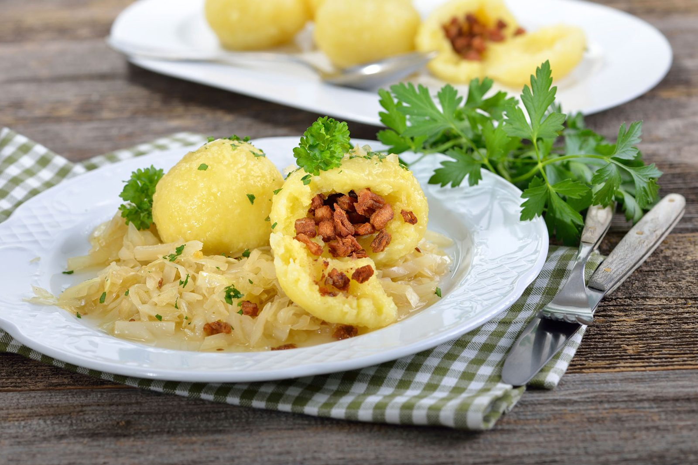

Doppelzimmer
Für zwei Personen, mit Balkon und Blick in die Bergwelt rund um Gmunden.
- Balkonja
- Dusche & WCim Zimmer
- Sat-TV & WLANkostenlos
- Schreibtisch mit Sessel, Radioweckerja
- Nichtraucherzimmeralle

17 Doppelzimmer und 10 Einbettzimmer mit Ausblick auf die umliegende Bergwelt — 2016 komplett neu renoviert, ruhig gelegen und trotzdem mitten in Gmunden.
Für zwei Personen, mit Balkon und Blick in die Bergwelt rund um Gmunden.
Gemütliche Einzelzimmer — beliebt bei Monteuren, Geschäftsreisenden und Radlern auf Durchreise.
Preise: Die aktuellen Zimmerpreise nennen wir Ihnen gerne direkt — telefonisch unter +43 7612 64262 oder in der Antwort auf Ihre Buchungsanfrage. Für Gruppen, Radlergruppen und längere Aufenthalte erstellen wir ein eigenes Angebot.

Bisher lief die Zimmerbuchung ausschließlich per Telefon und Formular mit manueller Rückmeldung. Hier stellen Sie Ihre Anfrage rund um die Uhr — mit allen Angaben, die wir für ein verbindliches Angebot brauchen.